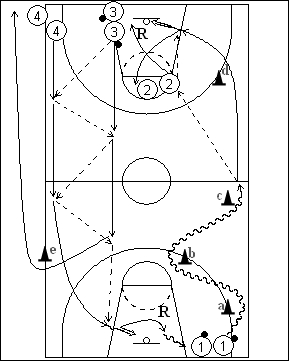

Déroulement
- Quatre files de joueurs. A une baseline, une file de joueurs avec ballons. Les autres files sont à l’opposé, une sans ballon à la ligne des lancers-francs et les deux dernières à la baseline (ballons également dans la file 3).
- Le premier joueur de la file 1 part en dribble en contournant les cônes a, b et c. Arrivé au centre du terrain, il passe au premier joueur de la file 2, contourne le cône d et reçoit pour un lay-up. Dans le même temps, les premiers joueurs des files 3 et 4 sont partis en redoublant les passes jusqu’à hauteur du cône e. Là, le premier joueur de la file 3 passe au premier de la file 4 pour un lay-up.
- Après son lay-up, 1 va dans la file 2; 2 réalise ce rebond et va dans la file 3. Après sa dernière passe pour un lay-up, 3 passe autour du cône e et va dans la file 4. Après son lay-up, 4 prend le rebond et va dans la file 1.
Coaching points
- Selon le rythme que l’on veut obtenir et le travail que l’on veut réaliser, on peut ajouter des cônes; de même, on peut reculer ou avancer le cône e.
- Par la suite, on peut demander un jump shoot au lieu d’un lay-up.